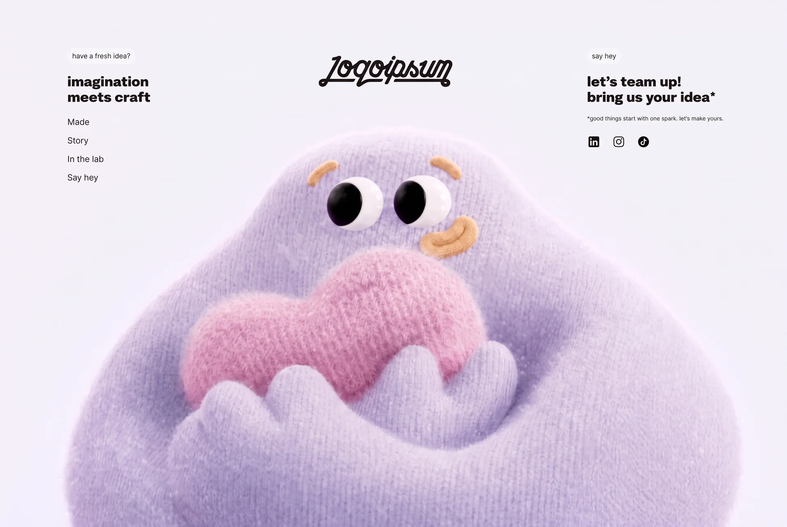

Playful Idea
Creative Agencycreative-agencyyilai-ai 公开页面
收录时间：2026-09-11正文：31,361 字符

本地预览图 · webp
完整提示词
Recreate this exact single-page creative studio footer. This is a fidelity task, not a redesign. Implement the supplied content, assets, CSS, and interactions exactly. Build only this footer page. Keep it local; do not publish or deploy it. Do not add a header, hero, cards, forms, sections, buttons, links, animations, or extra copy.
The source snapshots appended below are the authoritative specification. Copy them exactly, adapting only import paths or framework plumbing if necessary. Do not substitute approximate typography, another logo, stock video, or a generic eye-following effect.
1. Overall appearance
The whole page is one footer containing a left information column, a centered script logo, a right contact-style text column with three social icons, and a lavender character video. At desktop widths, the video fills the viewport behind all content. On mobile, the content stacks and the video appears after it in normal document flow. Keep the composition spacious and minimal, with very dark text and no tint, scrim, gradient, blur, or overlay covering the video.
There are no external links or actual contact destinations. Navigation-style labels, contact-style copy, social icons, and the logo are static display elements, not clickable anchors. Do not invent destinations, email addresses, phone numbers, WhatsApp actions, or social accounts. Do not show Truus or truus.co anywhere in the interface or metadata.
2. Exact visible copy
Preserve spelling, capitalization, punctuation, curly apostrophes, asterisks, and explicit line breaks. The replacement copy was matched to the previous copy's character counts; do not rewrite it again. Counts include spaces and punctuation.
Left badge: “have a fresh idea?” (18 characters)
Left headline, first line: “imagination” (11)
Left headline, second line: “meets craft” (11)
Four navigation-style labels, in order:
“Made” (4)
“Story” (5)
“In the lab” (10)
“Say hey” (7)
Right badge: “say hey” (7)
Right headline, first line: “let’s team up!” (14)
Right headline, second line: “bring us your idea*” (19)
Small note: “*good things start with one spark. let’s make yours.” (52)
Social icons in order: LinkedIn, Instagram, TikTok. Use the exact SVG files included below, with no visible text labels and no links.
The central logo is the outlined script Logoipsum SVG included in BrandLogo below. It has a 169 × 40 viewBox. This is the latest supplied SVG, not the earlier filled PNG logo. Use its exact path. Set the path fill to currentColor, so it inherits the text color #080909. Do not trace, regenerate, typeset, or approximate the logo.
3. Exact typography and colors
Headlines: Epilogue Black, weight 900, normal style.
All other text: DM Sans Regular, weight 400, normal style.
Use real font files and font-synthesis: none; do not simulate bold.
Do not use the previously suggested Oobi fonts. The final page reverted to Epilogue and DM Sans.
Download these exact font files and serve them locally:
DM Sans Regular source:
https://cdn.prod.website-files.com/683703490bc01e1b8c052e06/68370ddd1dd328d7914d6512_DMSans-Regular.woff2
Save as public/fonts/DMSans-Regular.woff2.
Epilogue Black source:
https://cdn.prod.website-files.com/683703490bc01e1b8c052e06/68370ddd06d737200122a835_Epilogue-Black.woff2
Save as public/fonts/Epilogue-Black.woff2.
Use @font-face with font-display: swap and the exact family names and weights in the supplied CSS.
Text and logo: #080909.
Desktop fallback background: #dfe4f2, normally covered by the video.
Badge background: #f7f8fa.
Mobile body and footer background: #f0eefa, sampled to match the upper background of the video.
No text shadows, decorative borders, cards, gradients, or drop shadows.
4. Exact desktop layout, viewport width greater than 700px
Apply border-box sizing globally. Body has zero margin and a minimum height of 100vh.
The footer is position: relative, min-height: 100vh, padding-top: 6.54vw, isolation: isolate, overflow: hidden.
Left block:
- margin-left: 8.65vw; width: 25vw.
- Badge: inline-flex, vertically centered, pill radius 100px, height 1.9vw, padding .39vw .61vw, font-size .88vw, line-height 1.2, nowrap.
- Headline: block, margin-top 1.45vw, font-size 1.66vw, weight 900, line-height 1.2, letter-spacing 0.
- Navigation labels: vertical flex column, align-items flex-start, gap .93vw, margin-top 1.3vw, font-size 1.075vw, line-height 1.35.
Logo:
- Position absolute: left 40.33vw, top 7.7vw, width 17vw.
- SVG display block, width 100%, height auto.
Right block:
- Position absolute: left 74.3vw, top 6.54vw.
- Same badge styling.
- Headline lines: flex column, align-items flex-start, margin-top 1.45vw, nowrap; use shared headline type.
- Note: margin 1.05vw 0 0; font-size .733vw; line-height 1.4; nowrap.
- Social row: horizontal flex, align-items center, gap 1.43vw, margin-top 1.61vw.
- Icon wrappers and images: display block, width and height 1.71vw.
Keep these vw values rather than substituting a generic centered max-width container. Preserve the exact three-column placement.
Video layer:
- Wrapper: position absolute, inset 0, z-index -1, pointer-events none.
- Video: position absolute, inset 0, display block, width 100%, height 100%, object-fit cover, object-position center.
- The video stays behind the text. There is no separate pupil canvas or eye overlay.
5. Exact mobile layout, viewport width 700px or less
Keep all desktop rules intact; apply the provided mobile overrides only within @media(max-width:700px).
- Body and footer background: #f0eefa.
- Footer: vertical flex column, gap 36px, minimum height 100svh, padding 40px 24px 0.
- Visual order: logo; left content block; right content block; video.
- Logo: position static, order 0, align-self flex-start, width 210px, max-width 75%, margin-bottom 4px.
- Left content: order 1, margin 0, width 100%.
- Badges: height 30px, padding 6px 11px, font-size 14px.
- Headings: font-size clamp(22px,6.3vw,30px), line-height 1.25, weight 900.
- Left heading and right headline stack: margin-top 19px.
- Navigation labels: two equal grid columns, column-gap 24px, row-gap 0, margin-top 20px, font-size 17px, line-height 1.4. Each label is vertically centered with min-height 44px. Row one is Made / Story; row two is In the lab / Say hey.
- Right content: position static, order 2, width 100%.
- Right headline stack: gap 4px, white-space normal.
- Small note: max-width 34ch, margin 16px 0 0, font-size 14px, line-height 1.5, normal wrapping.
- Social row: gap 18px, margin-top 20px. Wrappers are 44 × 44px flex boxes with centered 30 × 30px icons. First wrapper has margin-left -7px.
- Video wrapper: position relative, inset auto, order 3, z-index auto, flex none, align-self center, width calc(100% + 48px), aspect-ratio 4/3, margin-top -16px.
- Video fills that wrapper using centered object-fit cover.
- The mobile video is full bleed below the content, not behind or on top of the text. There is no footer bottom padding or extra section after it. The matching body color provides the transition without adding an overlay.
6. Exact video asset
Use this complete, literal CloudFront URL. Do not substitute another clip, omit path segments, escape the underscores, or alter the filename:
https://d8j0ntlcm91z4.cloudfront.net/user_38xzZboKViGWJOttwIXH07lWA1P/hf_20260908_073327_03643c0a-db33-417a-ae8f-4a39259c7f9c.mp4
The source is 1920 × 1080, 24 fps, approximately 7.041667 seconds. It shows a fuzzy lavender character holding a pink heart against a very pale lavender background. Its eyes move in circles within the actual recorded video.
Download the source as public/footer-background.mp4. For the exact seek-friendly playback asset used by this page, create public/footer-scrub.mp4 with:
ffmpeg -hide_banner -loglevel error -i public/footer-background.mp4 -an -c:v libx264 -preset fast -crf 20 -g 1 -pix_fmt yuv420p -movflags +faststart public/footer-scrub.mp4
Preserve the original dimensions, frame rate, duration, colors, and composition. The all-intra encoding is for responsive random seeking. Use this local derivative in the video element; it comes from the exact CloudFront source above.
The element must have muted, playsInline, and preload="auto". No native playback controls, audio, poster art, or visible loading UI.
7. Exact desktop mouse interaction
The interaction is video scrubbing: moving the cursor selects a frame where the character's recorded pupils point toward the cursor. Do not redraw pupils, shift the whole video, animate CSS eyes, edit video pixels, or continuously play the desktop clip.
Use the complete supplied gaze-frames.json lookup table and FooterBackground component below. These are the calibrated current implementation, not an approximation.
- The source-space midpoint between the eyes is (948,418) in a 1920 × 1080 frame.
- Calculate object-fit cover scale as max(videoRect.width/1920, videoRect.height/1080).
- Eye screen X = videoRect.left + videoRect.width/2 + (948-960)*scale.
- Eye screen Y = videoRect.top + videoRect.height/2 + (418-540)*scale.
- Subtract that screen-space eye midpoint from the pointer's clientX/clientY.
- Ignore changes inside an 8px radius around the midpoint to avoid unstable angles.
- Compute atan2(dy,dx), then normalize to [0,2π). Screen-space Y increases downward, so angle 0 is right, π/2 is down, π is left, and 3π/2 is up.
- Find the table row with the minimum circular angular difference min(abs(target-sample),2π-abs(target-sample)). Each row is [angleInRadians,videoTimeInSeconds].
- Use that row's time + 1/240 second. The small offset puts the seek inside the intended frame.
- Seek only if the time difference exceeds 1/48 second, the video has current frame data, and another seek is not in progress.
- Clamp the seek target to duration - 1/24.
- Coalesce pointer updates through requestAnimationFrame. Keep only the latest requested target while decoding, and handle seeked to apply the newest target.
- Do not interpolate time across the whole clip or assume the eye orbit moves at a constant rate. The table is intentionally non-linear.
- Desktop video starts paused at time 0. It remains at the selected frame after the mouse stops or leaves the page; there is no automatic reset or idle loop.
- Recalculate pointer-relative direction on resize and scroll.
- Register passive pointer and scroll listeners; remove all listeners and cancel animation frames on unmount.
Approximate cardinal-direction checks before adding the 1/240-second offset:
Right → 2.54167s.
Down → 0.33333s.
Left → 1.0s.
Up → 1.70833s.
8. Mobile playback and responsive behavior
At widths <=700px, disable pointer-driven seeking. The below-content video plays normally, muted and looping. Respect prefers-reduced-motion: reduce by pausing mobile playback. If autoplay is unavailable, leave the available frame visible. Do not show an error or force controls.
Use matchMedia change listeners so crossing the 700px breakpoint switches correctly between mobile looping playback and desktop paused cursor scrubbing. Changing reduced-motion preference also updates playback. Desktop behavior stays pointer-controlled regardless of the mobile playback preference.
9. Semantics and metadata
Use a footer element with aria-label="Footer". The video wrapper is aria-hidden="true" and pointer-events:none. The logo wrapper has role="img" and aria-label="Studio logo", and its SVG is aria-hidden. Social wrappers have the labels LinkedIn, Instagram, and TikTok. The exact page markup is supplied below.
Document language: en.
Page title: Studio — Footer.
Description: Fresh ideas, imagination, and creative collaboration.
Favicon: the same supplied logo as /logo.svg, with fill #080909 in the standalone file.
10. Implementation and completion constraints
Use React and TypeScript with ordinary CSS; the reference uses an App Router-style app/page.tsx, app/layout.tsx, and a client-side video component. Preserve the supplied source whenever the environment supports it. No animation library, UI framework, or canvas rendering is needed for this page.
Use the exact source files below. Fetch the two fonts and source video as specified. For public/logo.svg, take the SVG from BrandLogo, convert JSX attribute names fillRule/clipRule back to SVG fill-rule/clip-rule, and set currentColor to #080909 for the standalone file. Preserve its viewBox and path.
Build successfully and check the cardinal gaze mapping, mobile stacking, wrapping at 320px/390px widths, and desktop layout at widths above 700px. Do not add or change content while validating. Keep all work local; do not publish or deploy.
AUTHORITATIVE SOURCE FILES FOLLOW
File: app/page.tsx
```tsx
import FooterBackground from './footer-background';
import BrandLogo from './brand-logo';
export default function Home() {
return (
<footer className="footer" aria-label="Footer">
<FooterBackground />
<div className="jobs">
<span className="tag">have a fresh idea?</span>
<span className="headline job-title">imagination<br />meets craft</span>
<div className="footer-nav">
<span>Made</span>
<span>Story</span>
<span>In the lab</span>
<span>Say hey</span>
</div>
</div>
<div className="logo" role="img" aria-label="Studio logo">
<BrandLogo />
</div>
<div className="contact">
<span className="tag">say hey</span>
<div className="headline contact-links">
<span>let’s team up!</span>
<span>bring us your idea*</span>
</div>
<p className="note">*good things start with one spark. let’s make yours.</p>
<div className="socials">
<span aria-label="LinkedIn"><img src="/linkedin.svg" alt="" width="35" height="35" /></span>
<span aria-label="Instagram"><img src="/instagram.svg" alt="" width="35" height="35" /></span>
<span aria-label="TikTok"><img src="/tiktok.svg" alt="" width="35" height="35" /></span>
</div>
</div>
</footer>
);
}
```
File: app/globals.css
```css
@font-face{font-family:'DM Sans';src:url('/fonts/DMSans-Regular.woff2') format('woff2');font-weight:400;font-style:normal;font-display:swap}
@font-face{font-family:Epilogue;src:url('/fonts/Epilogue-Black.woff2') format('woff2');font-weight:900;font-style:normal;font-display:swap}
:root{--background:#dfe4f2;--foreground:#080909;font-family:'DM Sans',Arial,sans-serif;font-weight:400;color:var(--foreground);background:var(--background);font-synthesis:none}
*{box-sizing:border-box}
body{margin:0;min-height:100vh}
a{color:inherit;text-decoration:none}
a:focus-visible{outline:2px solid currentColor;outline-offset:6px}
.footer{position:relative;min-height:100vh;padding-top:6.54vw}
.jobs{margin-left:8.65vw;width:25vw}
.tag{display:inline-flex;align-items:center;border-radius:100px;background:#f7f8fa;padding:.39vw .61vw;font-size:.88vw;line-height:1.2;height:1.9vw;white-space:nowrap}
.headline{font-family:Epilogue,Arial,sans-serif;font-weight:900;font-size:1.66vw;line-height:1.2;letter-spacing:0}
.job-title{display:block;margin-top:1.45vw}
.footer-nav{display:flex;flex-direction:column;align-items:flex-start;gap:.93vw;margin-top:1.3vw;font-size:1.075vw;line-height:1.35}
.logo{position:absolute;left:40.33vw;top:7.7vw;width:17vw}
.logo svg{display:block;width:100%;height:auto}
.contact{position:absolute;left:74.3vw;top:6.54vw}
.contact-links{display:flex;flex-direction:column;align-items:flex-start;margin-top:1.45vw;white-space:nowrap}
.note{margin:1.05vw 0 0;font-size:.733vw;line-height:1.4;white-space:nowrap}
.socials{display:flex;align-items:center;gap:1.43vw;margin-top:1.61vw}
.socials span,.socials img{display:block;width:1.71vw;height:1.71vw}
.footer{isolation:isolate;overflow:hidden}
.footer-background{position:absolute;inset:0;z-index:-1;pointer-events:none}
.footer-background video{position:absolute;inset:0;display:block;width:100%;height:100%;object-fit:cover;object-position:center}
@media(max-width:700px){
:root{--background:#f0eefa;background:var(--background)}
body{background:var(--background)}
.footer{display:flex;flex-direction:column;gap:36px;min-height:100svh;padding:40px 24px 0;background:var(--background)}
.logo{position:static;order:0;align-self:flex-start;width:210px;max-width:75%;margin-bottom:4px}
.jobs{order:1;margin:0;width:100%}
.tag{height:30px;padding:6px 11px;font-size:14px}
.headline{font-size:clamp(22px,6.3vw,30px);line-height:1.25}
.job-title,.contact-links{margin-top:19px}
.footer-nav{display:grid;grid-template-columns:1fr 1fr;gap:0 24px;margin-top:20px;font-size:17px;line-height:1.4}
.footer-nav span{display:flex;align-items:center;min-height:44px}
.contact{position:static;order:2;width:100%}
.contact-links{gap:4px;white-space:normal}
.note{max-width:34ch;margin:16px 0 0;font-size:14px;line-height:1.5;white-space:normal}
.socials{gap:18px;margin-top:20px}
.socials span{display:flex;align-items:center;justify-content:center;width:44px;height:44px}
.socials img{width:30px;height:30px}
.socials span:first-child{margin-left:-7px}
.footer-background{position:relative;inset:auto;order:3;z-index:auto;flex:none;align-self:center;width:calc(100% + 48px);aspect-ratio:4/3;margin-top:-16px}
.footer-background video{position:absolute;inset:0;width:100%;height:100%;object-fit:cover;object-position:center}
}
```
File: app/footer-background.tsx
```tsx
'use client';
import { useEffect, useRef } from 'react';
import gazeFrames from './gaze-frames.json';
const TAU = Math.PI * 2;
const wrappedAngle = (angle: number) => (angle % TAU + TAU) % TAU;
// These angles were measured from the actual pupil positions in the clip's
// first complete orbit. Match direction, rather than assuming constant speed.
function timeForAngle(angle: number) {
const target = wrappedAngle(angle);
let nearestTime = gazeFrames[0][1];
let nearestDistance = Infinity;
for (const [sampleAngle, time] of gazeFrames) {
const difference = Math.abs(target - sampleAngle);
const distance = Math.min(difference, TAU - difference);
if (distance < nearestDistance) {
nearestDistance = distance;
nearestTime = time;
}
}
return nearestTime + 1 / 240;
}
export default function FooterBackground() {
const videoRef = useRef<HTMLVideoElement>(null);
useEffect(() => {
const video = videoRef.current!;
let frame = 0;
let desiredTime = 0;
let pointer: { x: number; y: number } | null = null;
let disposed = false;
const mobile = window.matchMedia('(max-width: 700px)');
const reducedMotion = window.matchMedia('(prefers-reduced-motion: reduce)');
const seek = () => {
frame = 0;
if (disposed || mobile.matches || video.readyState < 2 || video.seeking) return;
if (Math.abs(video.currentTime - desiredTime) > 1 / 48) {
video.currentTime = Math.min(desiredTime, video.duration - 1 / 24);
}
};
const schedule = () => {
if (!frame) frame = requestAnimationFrame(seek);
};
const updateTarget = () => {
if (mobile.matches || !pointer) return;
const rect = video.getBoundingClientRect();
const scale = Math.max(rect.width / 1920, rect.height / 1080);
// Match the exact object-fit: cover positioning, including mobile crops.
const eyeX = rect.left + rect.width / 2 + (948 - 960) * scale;
const eyeY = rect.top + rect.height / 2 + (418 - 540) * scale;
const dx = pointer.x - eyeX;
const dy = pointer.y - eyeY;
// Avoid unstable angles directly between the eyes.
if (Math.hypot(dx, dy) > 8) {
desiredTime = timeForAngle(Math.atan2(dy, dx));
schedule();
}
};
const move = (event: PointerEvent) => {
pointer = { x: event.clientX, y: event.clientY };
updateTarget();
};
const ready = () => {
video.loop = mobile.matches;
if (mobile.matches && !reducedMotion.matches) {
void video.play().catch(() => { /* Keep the first frame if autoplay is unavailable. */ });
} else {
video.pause();
if (!mobile.matches) { updateTarget(); schedule(); }
}
};
// Coalesce fast pointer movements while a frame is decoding. When it
// finishes, seek immediately to the latest requested gaze direction.
video.addEventListener('seeked', schedule);
video.addEventListener('loadeddata', ready);
mobile.addEventListener('change', ready);
reducedMotion.addEventListener('change', ready);
window.addEventListener('pointermove', move, { passive: true });
window.addEventListener('resize', updateTarget);
window.addEventListener('scroll', updateTarget, { passive: true });
if (video.readyState >= 2) ready();
return () => {
disposed = true;
cancelAnimationFrame(frame);
video.removeEventListener('seeked', schedule);
video.removeEventListener('loadeddata', ready);
mobile.removeEventListener('change', ready);
reducedMotion.removeEventListener('change', ready);
window.removeEventListener('pointermove', move);
window.removeEventListener('resize', updateTarget);
window.removeEventListener('scroll', updateTarget);
};
}, []);
return (
<div className="footer-background" aria-hidden="true">
<video ref={videoRef} muted playsInline preload="auto" src="/footer-scrub.mp4" />
</div>
);
}
```
File: app/gaze-frames.json
```json
[
[
0.037186,
2.54167
],
[
0.130722,
2.58333
],
[
0.234912,
2.625
],
[
0.321399,
2.66667
],
[
0.419378,
2.70833
],
[
0.493296,
2.75
],
[
0.597784,
2.79167
],
[
0.763067,
2.83333
],
[
0.778708,
2.875
],
[
0.878749,
2.91667
],
[
0.993308,
2.95833
],
[
1.262791,
3.0
],
[
1.388902,
3.04167
],
[
1.466609,
0.25
],
[
1.473318,
0.29167
],
[
1.520011,
3.08333
],
[
1.53824,
0.33333
],
[
1.6056,
0.375
],
[
1.640696,
3.125
],
[
1.691747,
0.41667
],
[
1.779194,
0.45833
],
[
1.869867,
0.5
],
[
1.984485,
0.54167
],
[
2.07265,
0.58333
],
[
2.183915,
0.625
],
[
2.267155,
0.66667
],
[
2.36138,
0.70833
],
[
2.44749,
0.75
],
[
2.517676,
0.79167
],
[
2.605329,
0.83333
],
[
2.670889,
0.875
],
[
2.809991,
0.91667
],
[
2.918365,
0.95833
],
[
3.134177,
1.0
],
[
3.240289,
1.04167
],
[
3.35949,
1.08333
],
[
3.464119,
1.125
],
[
3.549317,
1.16667
],
[
3.663539,
1.20833
],
[
3.78152,
1.25
],
[
3.878742,
1.29167
],
[
3.989446,
1.33333
],
[
4.066996,
1.375
],
[
4.225574,
1.45833
],
[
4.260255,
1.41667
],
[
4.276468,
1.5
],
[
4.404025,
1.54167
],
[
4.487075,
1.58333
],
[
4.552949,
1.625
],
[
4.628837,
1.66667
],
[
4.701131,
1.70833
],
[
4.773675,
1.75
],
[
4.833089,
1.79167
],
[
4.894145,
1.83333
],
[
4.962593,
1.875
],
[
5.028737,
1.91667
],
[
5.090028,
1.95833
],
[
5.212041,
2.0
],
[
5.28302,
2.04167
],
[
5.349352,
2.08333
],
[
5.412121,
2.125
],
[
5.473636,
2.16667
],
[
5.573871,
2.20833
],
[
5.656364,
2.25
],
[
5.759153,
2.29167
],
[
5.85261,
2.33333
],
[
5.938647,
2.375
],
[
6.048453,
2.41667
],
[
6.153327,
2.45833
],
[
6.222603,
2.5
]
]
```
File: app/brand-logo.tsx
```tsx
export default function BrandLogo() {
return (<svg aria-hidden="true" width="169" height="40" viewBox="0 0 169 40" fill="none" xmlns="http://www.w3.org/2000/svg"> <path fillRule="evenodd" clipRule="evenodd" d="M29.0723 1.88574C24.3542 11.4115 18.9111 20.6465 13.8486 29.9951H45.9502L43.8359 33.9951H11.6826L9.93262 37.2266C9.00891 38.932 7.22469 39.995 5.28516 39.9951H5C2.23866 39.9951 0.000131941 37.7564 0 34.9951C3.91714e-05 32.2337 2.2386 29.9951 5 29.9951H9.2998L22.2627 6.05859C20.7794 6.34026 19.0362 6.49512 17 6.49512V2.49512C23.3405 2.49512 25.0028 0.892332 25.416 0.234375L25.5439 0L29.0723 1.88574ZM5 33.9951C4.44774 33.9951 4.00004 34.4429 4 34.9951C4.00013 35.5473 4.4478 35.9951 5 35.9951H5.28516C5.75661 35.995 6.19046 35.7368 6.41504 35.3223L7.13379 33.9951H5ZM153.692 6.09082C154.023 6.02973 154.362 5.99512 154.706 5.99512C156.331 5.99526 157.731 6.6671 158.724 7.70508C159.759 6.63038 161.201 5.99512 162.74 5.99512C166.886 5.99549 169.583 10.359 167.729 14.0674L159.764 29.9971H160.465C164.434 29.9974 166.82 34.4015 164.652 37.7266C163.73 39.1417 162.154 39.995 160.465 39.9951H158.905C155.564 39.9951 153.207 37.0477 153.58 33.9971H93.9316L95.9551 29.9971H155.244L164.151 12.2783C164.676 11.2295 163.913 9.99549 162.74 9.99512C162.143 9.99512 161.596 10.3328 161.329 10.8672L152.73 27.9951H148.259L156.117 12.2783C156.641 11.2295 155.878 9.99549 154.706 9.99512C154.151 9.99512 153.638 10.2865 153.354 10.7568L146.196 25.0469C145.289 26.854 143.44 27.9951 141.418 27.9951C139.855 27.995 138.509 27.346 137.557 26.3447C136.39 27.3889 134.861 27.9951 133.24 27.9951C128.429 27.9951 125.3 22.9322 127.451 18.6289L130.255 13.0205C129.172 13.3136 128.05 13.4951 127 13.4951V9.49512C129.571 9.49512 132.585 8.3593 133.774 5.98242L137.353 7.77148L131.029 20.417C130.207 22.0607 131.402 23.9951 133.24 23.9951C134.176 23.995 135.032 23.4662 135.451 22.6289L143.774 5.98242L147.353 7.77148L140.211 22.0537C139.77 22.9472 140.42 23.9948 141.418 23.9951C141.927 23.9951 142.393 23.7077 142.621 23.2529L144.871 18.7705L149.717 9.07812C149.74 9.03164 149.767 8.98704 149.791 8.94141L151.712 5.10059L153.692 6.09082ZM157.691 34.0234C157.235 34.9274 157.893 35.9951 158.905 35.9951H160.465C160.802 35.995 161.117 35.8246 161.302 35.542C161.735 34.8777 161.258 33.9974 160.465 33.9971H157.705L157.691 34.0234ZM54.5957 5.99512C57.4465 5.99512 59.8061 7.46913 61.165 9.58301L62.9707 5.99609L66.5439 7.79297L53.1846 34.3496L58.0771 31.418C59.6303 30.4871 61.4071 29.9952 63.2178 29.9951H81.2334L79.1191 33.9951H63.2178C62.1314 33.9952 61.0647 34.2901 60.1328 34.8486L52.2861 39.5518C49.7094 41.096 46.7138 38.3147 48.0635 35.6309L51.9121 27.9775C51.7457 27.9882 51.5784 27.9951 51.4102 27.9951C45.6303 27.9951 41.8606 21.9422 44.3828 16.7637C43.3736 17.2276 42.3313 17.6205 41.2627 17.9404L38.3955 23.6758C37.0719 26.3228 34.3667 27.995 31.4072 27.9951C25.5986 27.9951 21.8203 21.8819 24.418 16.6865L27.6045 10.3145C28.9281 7.66743 31.6333 5.99524 34.5928 5.99512C38.9215 5.99512 42.1215 9.39031 42.3965 13.2705C44.2538 12.4558 45.9827 11.3612 47.5166 10.0146L48.0469 9.54785C49.4769 7.34884 51.9333 5.99523 54.5957 5.99512ZM31.708 11.3174C31.5037 11.5539 31.3253 11.8163 31.1816 12.1035L27.9961 18.4756C26.7282 21.0114 28.5721 23.9951 31.4072 23.9951C32.8516 23.995 34.1724 23.1787 34.8184 21.8867L36.6709 18.1797C33.6934 17.3187 31.5841 14.4441 31.708 11.3174ZM54.5957 9.99512C53.2122 9.99524 51.9438 10.745 51.2715 11.9434L51.1729 12.126L47.999 18.4756C46.7311 21.0114 48.5751 23.9951 51.4102 23.9951C52.8546 23.995 54.1753 23.1787 54.8213 21.8867L58.0068 15.5146C59.2747 12.9789 57.4308 9.99512 54.5957 9.99512ZM36.0371 10.2744C35.0659 12.1592 36.4192 14.2916 38.3574 14.4268C38.651 12.6727 37.6608 10.9354 36.0371 10.2744ZM100.497 6.19336C101.028 6.06343 101.579 5.99518 102.141 5.99512C107.284 5.99512 110.631 11.4082 108.331 16.0088L105.326 22.0166C104.872 22.9254 105.533 23.9949 106.549 23.9951C107.056 23.995 107.521 23.7141 107.758 23.2656C110.317 18.4123 112.964 13.5937 115.418 8.68652C116.243 7.03704 117.929 5.99512 119.773 5.99512H120V9.99512H119.773C119.444 9.99512 119.143 10.1812 118.996 10.4756C118.718 11.0319 118.869 11.7072 119.357 12.0918L122.819 14.8145C125.847 17.1965 126.728 21.4092 124.907 24.8047L124.808 24.9912C123.816 26.8406 121.887 27.9949 119.789 27.9951C115.539 27.9951 113.082 23.1741 115.58 19.7354L115.882 19.3193L119.118 21.6709L118.816 22.0859C118.239 22.8806 118.807 23.9951 119.789 23.9951C120.413 23.9949 120.987 23.6516 121.282 23.1016L121.383 22.9141C122.286 21.2297 121.849 19.1396 120.347 17.958L116.885 15.2354C116.796 15.1657 116.711 15.0928 116.628 15.0186L111.296 25.1318C110.367 26.8927 108.54 27.995 106.549 27.9951C104.95 27.995 103.576 27.3193 102.617 26.2812C101.377 27.3663 99.7668 27.995 98.0605 27.9951C95.8051 27.995 93.8949 26.9543 92.6553 25.3975C92.6267 25.4412 92.599 25.4855 92.5693 25.5283L87.04 36.5898H82.5674L86.9082 27.9072C83.5643 27.3024 81.5799 23.5799 83.2012 20.3936L84.8223 17.2061C83.8973 17.5902 82.9368 17.8989 81.9482 18.1221L81.0732 18.3193L78.3955 23.6758C77.0719 26.3228 74.3667 27.995 71.4072 27.9951C65.5986 27.9951 61.8203 21.8819 64.418 16.6865L67.6045 10.3145C68.9281 7.66743 71.6333 5.99524 74.5928 5.99512C79.1318 5.99512 82.4301 9.72801 82.416 13.8389C84.9987 12.9681 87.2685 11.3381 88.9229 9.14844L90.5322 5.9873L94.0967 7.80176L86.7656 22.208C86.35 23.0259 86.9448 23.9948 87.8623 23.9951C88.3651 23.995 88.8341 23.7759 89.1572 23.4092C92.2092 17.3064 95.2605 11.2033 98.3125 5.10059L100.497 6.19336ZM71.4834 11.6016C71.3713 11.7595 71.2699 11.9269 71.1816 12.1035L67.9961 18.4756C66.7282 21.0114 68.5721 23.9951 71.4072 23.9951C72.8516 23.995 74.1724 23.1787 74.8184 21.8867L76.4834 18.5547C73.4375 17.7227 71.296 14.7761 71.4834 11.6016ZM102.141 9.99512C101.042 9.99541 100.037 10.6133 99.5391 11.5918L95.4492 19.7705C94.4791 21.7114 95.8908 23.9948 98.0605 23.9951C99.1661 23.995 100.177 23.3697 100.672 22.3809L104.752 14.2197C105.722 12.2787 104.311 9.99512 102.141 9.99512ZM75.8301 10.6494C74.7824 12.5702 76.2429 14.7974 78.2822 14.7803C78.7834 12.9102 77.7686 10.9779 76.0342 10.2734L75.8301 10.6494ZM97.1396 1.82422L94.8096 6.40234L91.2451 4.58789L93.5742 0.00976562L97.1396 1.82422Z" fill="currentColor"/> </svg>);
}
```
File: app/layout.tsx
```tsx
import type { Metadata } from 'next';
import './globals.css';
export const metadata: Metadata = {
title: 'Studio — Footer',
description: 'Fresh ideas, imagination, and creative collaboration.',
icons: { icon: '/logo.svg' },
};
export default function RootLayout({children}: Readonly<{children: React.ReactNode}>) {
return <html lang="en"><body>{children}</body></html>;
}
```
File: public/linkedin.svg (find linked in icon)
```
File: public/instagram.svg (find insta icon)
File: public/tiktok.svg (find simple Tiktok iocn)把上面的提示词完整复制到支持长文本的 AI 工具中，再按需要替换品牌名、配色与文案。提示词描述的是整页结构与动效节奏，生成后建议在真实浏览器里检查首屏加载和移动端表现。
来源与版权
该条目来自公开提示词页面，原始出处信息未随页面提供。
提示词文本与预览素材的版权归原作者或原平台所有，本站仅作索引与归档。若你是权利人并希望移除本条内容，请通过联系方式告知。
同分类提示词
暂无同分类条目。